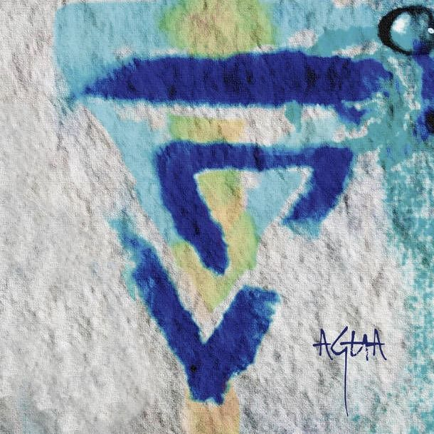
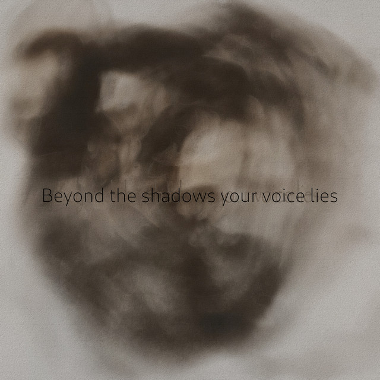
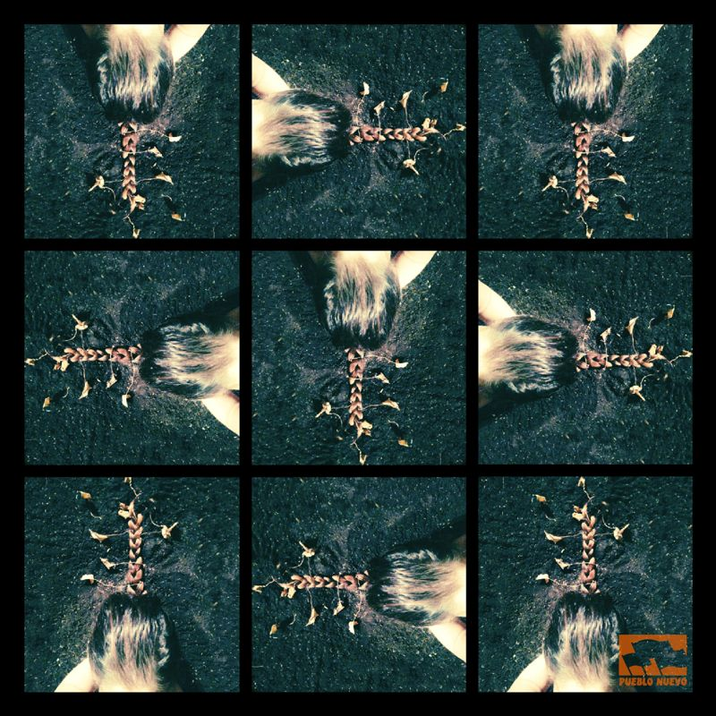
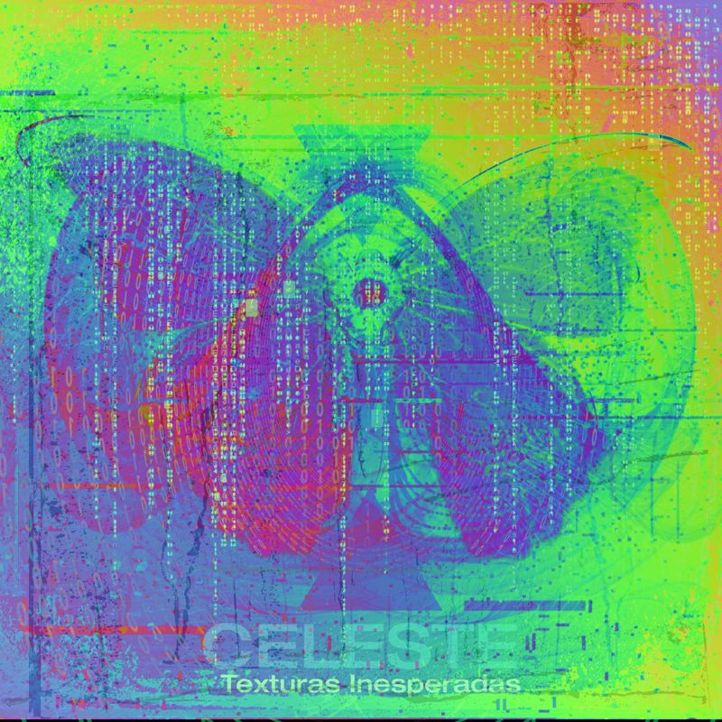

Music
Concert works for ensembles, records, and live-coded sets for dancefloors and concert halls. The complete catalogue is under Works.
Records
Releases

Beyond the Shadow Your Voice Lies

Secretos del viento

Texturas inesperadas
Video
Ensembles and new music


Video
Audiovisual


Video
Live sets


Collectives
Groups


Since 2019
Performances
Newest first. The piece performed is in italics.
2026
- Oct 9Low Frequency TrioCCRMA, Stanford CAVerso V
- Oct 3Transitions: Primrose Ohling and CelesteCCRMA, Stanford CAFrom Within You
- Sep 29Morton Feldman Centenary: Blackbox EnsembleCCRMA, Stanford CAStranded
- Jun 13Inorganic Organ TransmutationsFountain Street Church, Grand Rapids MIAeon Sophia I
- JanThe Return of the AmpsBing Studio, Stanford CAVerso III
- JanEnsemble MosaikCCRMA, Stanford CAVerso II
2025
- OctTransitions 2025CCRMA, Stanford CAVerso I
- OctDecipher SF × Concrete CutSan Francisco CAAlgorave live set
- OctSLORK: The House of the ChampionsStanford CA
- OctFrontiers of CreationSan Francisco CAAlgorave live set
- JunFuture PhasesMIT, Cambridge MAA Blank Page III
- MayZac DulkinCCRMA, Stanford CA
- AprThe Big Spring Installation ShowcaseCCRMA, Stanford CA
- AprDeparture DuoCCRMA, Stanford CAMi compañera invisible
- FebJuana MonsalveBogotá, ColombiaMi compañera invisible
- FebNiloufar ShiriCCRMA, Stanford CAA Blank Page II
2024
- NovPost Transferencias AuralesMexico CityAlgorave live set
- NovVenas RotasMexico CityAlgorave live set
- NovGray Area AlgoraveSan Francisco CAAlgorave live set
- NovDistractfoldCCRMA, Stanford CA
- OctResonancias CinéticasBogotá, Colombia
- Hexcode 2024San Francisco CAAlgorave live set
- SepFake and Gay × AV Club SFSan Francisco CAAlgorave live set
- SepLive at The TankRangely CO
- AugLive at Grote Saint MarcelFrance
- JunGe Wang and CelesteStanford CA
- MayLinea EnsembleCCRMA, Stanford CASemidanza para una máquina
- MaySounds from The TankRangely CO
- MayOverrideSan Francisco CAAlgorave live set
- AprCCRMA 50th AnniversaryBing Studio, Stanford CA
- MarAdapter EnsembleCCRMA, Stanford CALo que hay detrás de los ojos de un ángel caído
- FebCCRMA 50th AnniversaryBing Concert Hall, Stanford CA
- JanAudiovisual SessionsStanford CA
- JanCode Punk AlchemyCCRMA, Stanford CAAlgorave live set
2023
- NovAlgorithmic Dance RitualCCRMA, Stanford CAAlgorave live set
- AugDistractfold at IKLEKTIKLondon, UK
- AugAI & Musical CreativityBrighton, UK
- AugMenningarnóttReykjavík, IcelandAlgorave live set
- JunElephantora, SMC 2023Stockholm, Sweden
- JunSLORK at Bing Concert HallStanford CAInvisible Powers; In Pandora’s Hands
- JunClub Code at Gray AreaSan Francisco CAAlgorave live set
- JunAlgorave post-NIMEMexico CityAlgorave live set
- MayNIME 2023Mexico CityPandora’s Mycophony
- AprCCRMA Live at BingStanford CA
- DistractfoldCCRMA, Stanford CAMadremonte
- FebAlgokickbackSan Francisco CAAlgorave live set
- JanJSConf HalfstackPhoenix AZ
2021
- Oscillation FestivalBrussels, BelgiumWorkshop; concert with Olivia Jack
- NIME 2021Shanghai, Chinawith SuperContinent
2020
- Dec 4Festival Santo NoiseCórdoba, Argentina
- Dec 3Bug FestivalMedellín, Colombia
- Nov 30Festival Real MixBogotá, Colombia
- Nov 23Culturele ZondagUtrecht, Netherlands
- Nov 9Boiler Room live sessionsAmsterdam, Netherlands
- Jun 3Live at ConcordiaMontréal, Canada
- FDM Exploraciones NarrativasSantiago, Chile
- REUDO ’20Cusco, Peru
- Festival BogotraxBogotá, Colombia
2019
- Ecologías DigitalesMedellín, Colombia
- Festival Estéticas ExpandidasPasto, Colombia